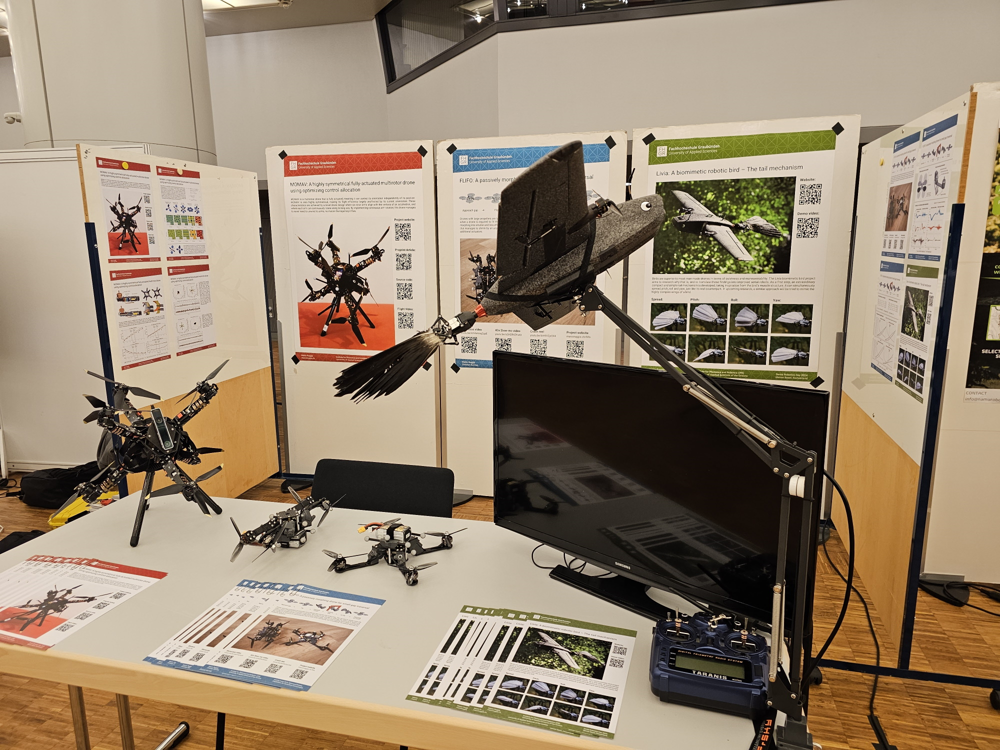

In 2023 I worked for 9 months as a PhD candidate at the Biomimetics Lab in Groningen, Netherlands. I saw myself forced to resign due to insurmountable disagreements of both professional and personal nature with my supervisor, David Lentink. I wasn't the first one and probably won't be the last one either. What is left of that time are lots of notes and observations on how birds work, as well as many ideas on how to build robotic birds, called ornithopters. Since I firmly regard these ideas as my own, and I won't let myself be be intimidated to drop them, I've decided to continue working on them as a hobby project. All results shown below were achieved after I left and do not include any contributions from my former supervisor.

It is thought that the tail of a bird contributes significantly to its maneuverability and efficiency in flight. Four degrees of freedom are recognized that achieve these characteristics: spread, yaw, pitch and roll. While there exist robotic bird tails that can perform all these motions, they are commonly implemented with bulky series linkages and many moving parts.
My realization was that a robotic tail can be built with four parallel actuators if they attach to four corners of a flexible tail that pivots around a fixed center. This arrangement is somewhat similar to how muscles act on the tail of a real bird! To build a mechanism like that I had to use a vast array of manufacturing methods and materials: 3D Printed parts, milled CFRP parts, salvaged RC helicopter linkages, laser-cut spring steel, and even ordinary hot glue. Although, the most difficult manufacturing problem, how to mimic the feathers, was solved in the easiest way possible, by simply using actual pigeon feathers.
If some reader is interested in emulate my design, they should also carefully consider the placement of the linkages, as they strongly affect the range and stability of the mechanism. The problem of computing the inverse kinematics of this mechanism is also a very interesting and challenging one!
The tail mechanism had its first public appearance at the Swiss Robotics Day on the 1. November 2024. It was on display mounted to a carrier plane (Heewing T1-Ranger) that is currently being used to perform system identification flights. Results of these flights are still pending and will be shared once completed! Keen eyed observers might also have noticed that the pigeon tail feathers were replaced by crow feathers, to be better proportionated to the wingspan of the plane.

Work in progress..
Work in progress..